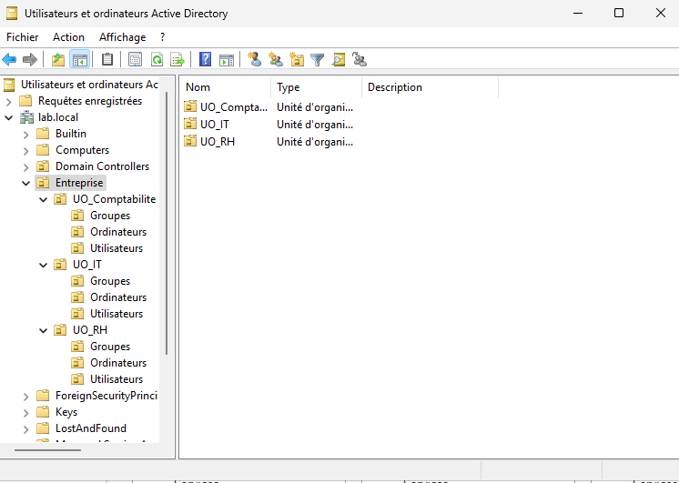
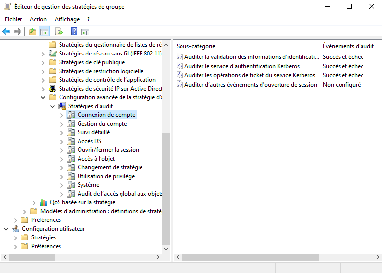
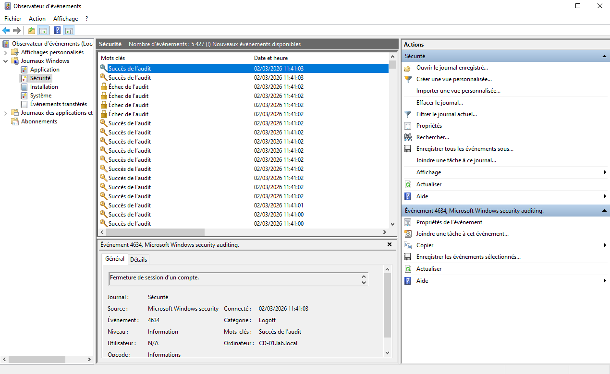
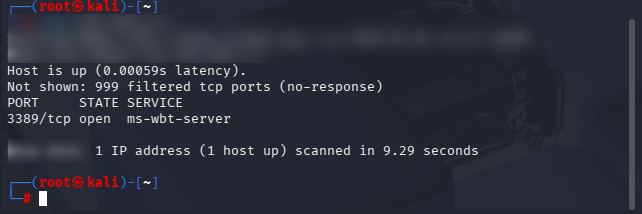
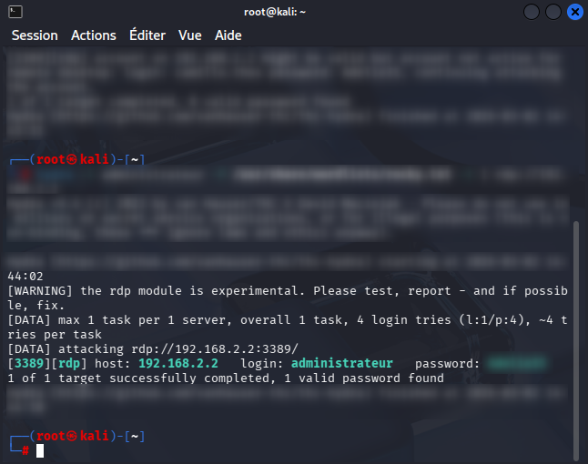
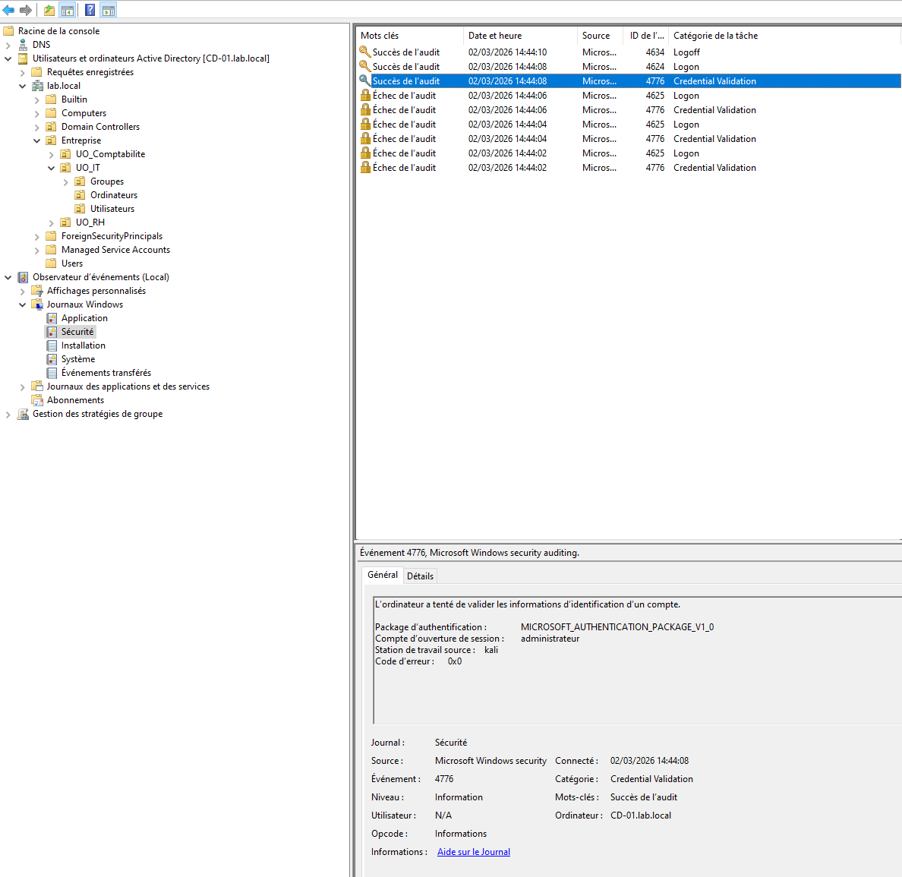
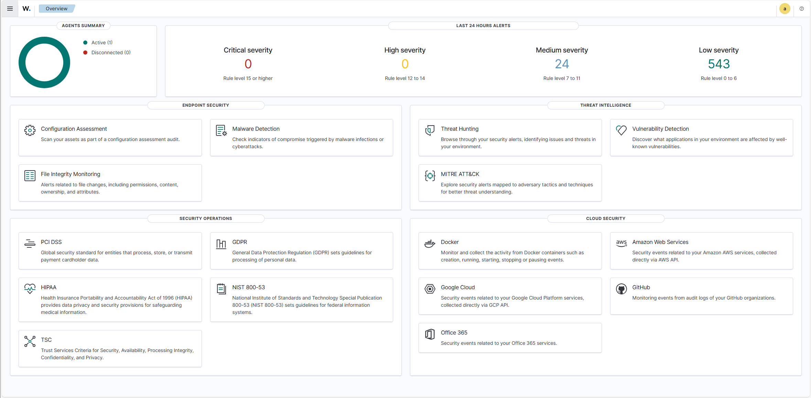
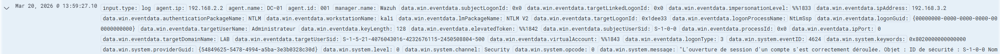
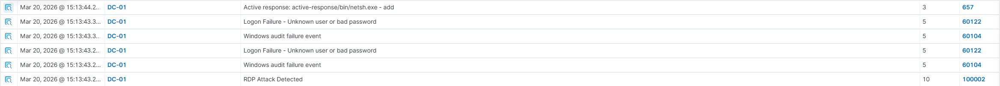
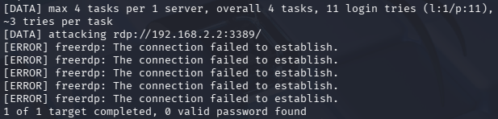

Construction d'un environnement Active Directory complet, du déploiement de l'infrastructure jusqu'à la détection et la réponse automatisée. Chaque phase s'appuie sur la précédente pour former une chaîne de sécurité cohérente.
Voir sur GitHub ↗Mise en place d'une infrastructure Active Directory fonctionnelle dans un environnement réseau segmenté simulant un système d'information d'entreprise. Aucun mécanisme de détection ou SIEM n'est utilisé à ce stade.
Plan d'adressage LAN
| Machine | Rôle | IP |
|---|---|---|
| OPNsense | Gateway LAN | 192.168.2.1 |
| DC01 | Domain Controller | 192.168.2.2 |
| CLIENT01 | Poste utilisateur | 192.168.2.10 |
Plan d'adressage ATTACK NET
| Machine | Rôle | IP |
|---|---|---|
| OPNsense | Gateway OPT1 | 192.168.3.1 |
| KALI01 | Machine d'attaque | 192.168.3.2 |
Machines virtuelles
OPNsense Firewall assurant la segmentation entre les réseaux. Interfaces WAN (accès externe optionnel), LAN (réseau interne), OPT1 (réseau attaquant).
DC01 Windows Server 2025 Active Directory Domain Services, DNS. Domaine lab.local
CLIENT01 Windows 10 Poste utilisateur joint au domaine, utilisé pour générer de l'activité légitime.
KALI01 Machine utilisée pour simuler des attaques provenant d'un réseau distinct.
Organisation Active Directory
L'AD est structuré avec trois unités organisationnelles représentant les services de l'entreprise. Chaque OU contient un dossier Utilisateurs, Groupes et Ordinateurs. Cette organisation permet d'appliquer des GPO ciblées, de simuler des délégations d'administration et de reproduire des cas réalistes d'élévation de privilèges.

Validation
Mise en place de la journalisation de sécurité sur l'environnement Active Directory afin de rendre l'infrastructure observable avant toute simulation d'attaque. L'objectif est d'établir un comportement normal (baseline) du domaine.
Activation des stratégies d'audit
Les audits ont été configurés via une stratégie de groupe appliquée aux contrôleurs de domaine.
Default Domain Controllers Policy → Configuration ordinateur → Paramètres Windows → Paramètres de sécurité → Configuration avancée de la stratégie d'auditCatégories activées

Validation de la journalisation
Vérification via Observateur d'événements → Journaux Windows → Sécurité.
| Event ID | Description |
|---|---|
| 4624 | Ouverture de session réussie |
| 4625 | Échec d'authentification |
| 4672 | Attribution de privilèges spéciaux |

Établissement d'une baseline
Activité légitime générée depuis CLIENT01 ouverture de session, déconnexion/reconnexion, accès aux ressources, administration AD et trafic réseau standard. Cette étape permet de différencier une activité normale d'un comportement suspect.
Résultat
L'infrastructure produit désormais des journaux de sécurité exploitables. Le domaine est prêt pour la phase suivante.
Simulation d'une attaque par brute force sur le service RDP afin d'observer les traces générées dans les journaux Windows et valider la configuration d'audit de la phase précédente.
Contexte
| Rôle | Machine | IP |
|---|---|---|
| Cible | DC01 RDP TCP 3389 | 192.168.2.2 |
| Attaquant | KALI01 | 192.168.3.2 |
Étape 1 Découverte du service
Vérification de l'exposition du service RDP depuis le réseau attaquant. Résultat port 3389 ouvert, service ms-wbt-server détecté.

Étape 2 Simulation du brute force
Multiples tentatives d'authentification générées depuis Kali. Résultats multiples tentatives échouées, puis découverte d'un mot de passe valide.

Étape 3 Analyse des journaux Windows
Analyse via Observateur d'événements → Journaux Windows → Sécurité.
| Event ID | Description |
|---|---|
| 4625 | Échec de connexion |
| 4624 | Connexion réussie |
| 4776 | Validation des identifiants |

Indices détectables
Conclusion
L'environnement permet d'identifier une tentative de brute force et de préparer la mise en place d'une réponse automatisée objet de la Phase 04.
Déploiement d'un SIEM/XDR open source sur l'infrastructure existante afin d'automatiser la détection des comportements suspects et de déclencher des réponses sans intervention manuelle.
Architecture
| Machine | Rôle | IP |
|---|---|---|
| WAZUH01 | Manager + Dashboard (Debian 12) | 192.168.2.20 |
| DC01 | Domain Controller + Agent | 192.168.2.2 |
| CLIENT01 | Poste utilisateur + Agent | 192.168.2.10 |
| KALI01 | Machine d'attaque | 192.168.3.2 |
Événements surveillés
| Event ID | Description |
|---|---|
| 4625 | Échec d'authentification |
| 4624 | Ouverture de session réussie |
| 4776 | Validation des identifiants NTLM |
| 4672 | Attribution de privilèges spéciaux |
| 4720 | Création d'un compte utilisateur |
| 4732 | Ajout d'un membre à un groupe privilégié |
Règles de détection


Réponse automatisée
Wazuh déclenche automatiquement un blocage lorsque la règle 100002 atteint le niveau 10. L'IP source 192.168.3.2 est bloquée via netsh.exe sur DC01 Kali ne peut plus établir de connexion RDP.
Note Windows dispose également d'un mécanisme natif de verrouillage de compte via GPO (Account Lockout Policy) qui complète la réponse au niveau système.


Validation
Le scénario de la Phase 03 est rejoué KALI01 (192.168.3.2) lance le brute force → Wazuh détecte les 4625 répétés → règle 100002 niveau 10 → active response netsh.exe → IP bloquée → Hydra 0 valid password found.
Limites et pistes d'amélioration